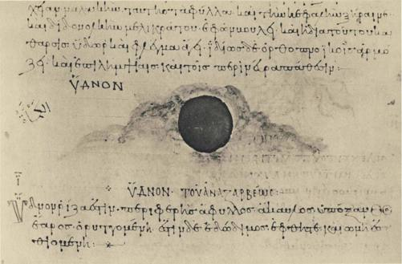
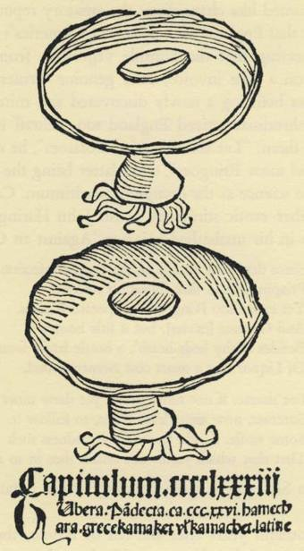
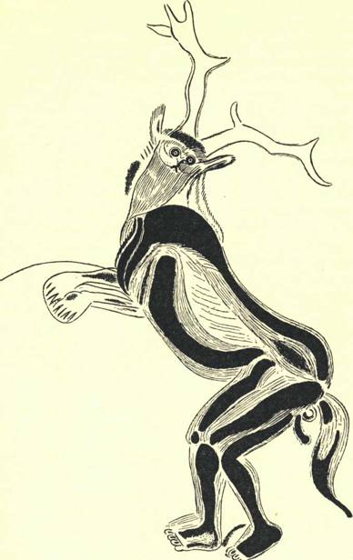

It might seem that by now we had exhausted the erotic imagery of the fungal
world, wherein fire, mucus, noses, candles, and mushrooms dance together in a
throbbing surrealist fandango, the whole obscene performance conducted inside
the uterine envelope of the primeval gamba. But not so. We have yet to speak
of truffles.
The Greeks used various words for underground fungi, but we think we can
prove that the ύδνον was our truffle. In the Morgan codex of Dioscorides there
is a miniature accompanying the section on the ύδνον that gives us our earliest
pictorial representation of a tuber buried in the earth, and an excellent repre-
sentation it is.
The truffle in Latin was the tuber, which took the form of tufer in an Oscan or
Umbrian dialect. The Romans knew various kinds of tuber. The most esteemed
were from Africa, and were probably not true truffles but an underground fungus
known to science today by the name of terfezia. From the Latin word came the
French truffe, the Spanish trufa, and the English 'truffle'. From a form supposed
to have been terrae tufer the Italians arrived at the modern tartufo and a dimi-
nutive tartuffola. The surprising thing is that this last word turns up in German
as the name for the potato, Kartoffel, and from there spread eastward throughout
the Slavic lands, until today half of Europe calls the potato by the word that
originally meant 'truffle'! In our view the explanation for this curious trans-
fer of meaning lies in the preoccupation with aphrodisiacs of i6th century
Europe.
When Ponce de Leon embarked on his quest for the Fountain of Youth,
he was bent on discovering a sensational aphrodisiac of lasting virtue. What a
prize would be his if he could present to the Old World a miraculous bath to
supersede all the amatory prescriptions in traditional use! Among those traditional
inciters to venery none enjoyed higher esteem than truffles, and indeed this
reputation of theirs survives into our own times. No pages in Brillant-Savarin's
Physiologic du Gout are more delightful than those devoted to a judicial weighing
of the evidence in this matter of truffles and love. There are many kinds of
subterranean fungi, of which some are entitled to be called truffles; and of these
true truffles, a few species are esteemed by gourmets. In Spanish, trufa is the
name given to a truffle of high culinary worth. There are two other terms used
generally for the underground fungi: turma and criadilla de tierra. These are both
interesting, expressing as they do the aphrodisiacal virtue attributed to the whole
166
THE SECRETS OF THE TRUFFLE
tribe of underground fungi. Turma in Catalan means 'testicle', and in Spanish
it means both 'testicle' and 'truffle'. It is an old word, probably of pre-Roman
origin, coming down from the same Indo-European root 'tu' that gives to Latin
tuber and tumor, the idea of organic swelling being inherent in them ah1. Cria-
dilla is the standard word in Spanish for 'testicle'. It is the word used for lamb's
fries, the French amourette. The Spaniards' words for the truffle reveal the precious
virtue that these earthy growths were supposed to possess.
Immediately after the Spaniards fell on America in the idth century, they
discovered in the New World first the sweet potato1 and then the potato, the
batata and the papa. They found the batata in the Antilles, probably in Hispa-
niola: the word first appears in 1516, a borrowing from the Taino Indians who
were then living in the Greater Antilles and Bahamas. (Their name should he
pronounced in three syllables, as though written 'Taino'.) The Tainos deserved
a kinder fate than was theirs: they and their language are now dead these many
generations, and few today know even the tribal name of these first victims of
the invaders from Europe. The Tainos possessed a tongue belonging to the
Arawakan family of Indian languages, which were spoken by tribes scattered at
the time of the Conquest all the way from Florida and the Bahamas on the north
through the Greater Antilles and across the tropical belt of South America as
far south as what is now known as Matto Grosso. These Tainos of the Islands
were a gentle folk: they seemed to lend verisimilitude to the medieval dreams
of a Golden Age, and gave impetus to the notion of the Noble Savage that was
destined to captivate intelligent men in the Age of Reason. The blameless Taino
cultivated sweet potatoes and maize, smoked tobacco, slept in a hammock,
and plied the sea ways in long 'canoas'. The Spaniards remarked on the unifor-
mity of the Taino language throughout the various Islands - clearly in the Taino
world the sea was a highway to speed communications and not an insulating
barrier. Today even scholars often confuse the winsome Tainos with their fero-
cious enemies, known variously in the idth century as the Caribs or Calibs or
Canibs, a race of savage warriors who when the Spaniards arrived had already
seized the Lesser Antilles and were harassing the Tainos on the larger islands.
The Europeans quickly overwhelmed them both. But all unawares, by a natural
filtering of the Indian vocabularies, the world distinguishes to this day between
these two lost and almost forgotten peoples. From the language of the Tainos
we possess a legacy of five common and friendly words: potato, maize, tobacco,
hammock, and canoe. From the Canibs came our 'cannibals', and the bestial
I. We are familiar with the evidence indicating prior knowledge of the sweet potato in Polynesia, which has
stirred up discussions that do not concern us.
Caliban whom Shakespere placed in the still-vex'd Bermoothes was the liter-
ary scion of the Calibs.
The Tainos certainly did not attribute aphrodisiacal powers to the batata or
sweet potato. They could not have been under illusions about this humble
vegetable, so commonplace for them. But the Spaniards, obsessed by the idea of
aphrodisiacs, were quick to discover in the batata a new and more potent truffle.
(Were they under a temptation to hold the novel food to blame for their excesses
with the native womenfolk?) A few years later they discovered the white potato
in the Andean highlands, the papa as it was called in Quechua, the language of
the Inca and his people. Now the story repeats itself: Agustin de Zarate, in his
classic account of the conquest of Peru, published in 1555, informs his readers
that the white potato is like the turma de tierra, 'earth's testicle', the truffle of
precious virtue:
... y los indios comen unas rakes que llaman papas, que son de hechura y aun casi
sabor de turmas de tierra. . . [BOOK, in, Chap. 12]
This work was promptly translated by Thomas Nicholas and published in
London in 1581. Since truffles were unknown to the English, we were eager
to see how the excellent Nicholas met his difficulty in rendering the sentence
where they are mentioned:
... The Indians of this province eateth certaine Rootes called Papas, whiche are verie
like bothe in makynge and taste Turnepes.
How the humble turnip is here exalted, and the truffle humbled! Were
truffles ever so grossly maligned before or since?
Shortly after the batata, the Spaniards brought back from the New World
the white potato, and from Spain it reached Italy before 1588, where it was
called taratouffli, the Italian word for 'truffles', a translation of the Spanish name
but without the strong erotic association of turmas. Quickly thereafter it ap-
peared in the Low Countries, Switzerland, and Germany, and then in France.
It arrived in England after the sweet potato but before the end of the century.
The two vegetables became deeply entangled in verbal confusion. In Spanish-
speaking America the white potato is widely known to this day as the papa,
a name clothed with all the rights of chronological and topographical primacy.
But this word took no hold in Europe and batata served for both vegetables,
finally in England attaching itself for good to the wrong plant. The Spaniards
compounded the confusion by also bestowing on the new vegetables their own
name for truffles. To this day in some parts of Colombia potatoes are turmas or
168

PLATE xxxn. Tuber. Miniature from a loth century Byzantine codex (No. 652) of Dioscorides.
New York, The Pierpont Morgan Library.
THE SECRETS OF THE TRUFFLE
'testicles', and in Spain they were known as criadillas and trufas. In the dialect
of Aragon trufa has been reported in the form triunfa - a popular malformation
that suggests the amorous triumph assured to the hopeful consumer of criadillas.1
For a time potatoes remained a rarity, priced high in keeping with the virtue
attributed to them. Their appearance in England points up a curious cultural
phenomenon. Reaching England by way of Spain, both kinds of potatoes
while in transit assumed like changelings the amatory reputation of the truffle.
Thus it came about that England took delivery of America's gifts with a Spanish
billing, never suspecting that the humble vegetables from the New World
were now sailing on a false invoice, their genuine virtues lost from view in
the resplendent aura befitting a newly discovered and miraculous aphrodisiac.
The craze for aphrodisiacs seized England too. Falstaff in The Merry Wives
of Windsor invokes them. "Let the skie raine Potatoes", he exclaims, and "haile
kissing-Comfits, and snow Eringoes", these latter being the candied root of the
sea-holly, known to science as the eryngium maritimum. Caviar in Elizabethan
times was yet another erotic stimulant, as Sir John Harington, godson of the
Queen, reminds us in his unabashed epigram 'Against an Old Letcher':
Since thy third cariage of the French infection
Priapus hath in thee found no erection: Yet eatst
thou Ringoes, and potato Rootes, And Gaueare
[caviar], but it litle bootes. Besides at thy beds-
heads', a bottle lately found, Of Liquor that a
quart cost twenty pound.
For shame, if not more grace, yet shew more wit,
Surcease, now sinne leaues thee, to follow it. Some
smile, I sigh, to see they madness such That that
which stands not stands thee in so much.
Those 'potatoes' in Shakespere were certainly sweet potatoes; in Harington,
we are not sure.
For almost a thousand years after the fall of Rome, there seems to be no
mention of truffles in surviving documents.2 In the I3th century Albertus Magnus
1. We are indebted to Professor Juan Corominas for the etymology of turma. For the early usage of names for
potatoes and sweet potatoes, there is a beautiful monograph by Pedro Henriquez Urefia, Para la Historia de los
Indigenismos, published by the Institute de Filologia, under the auspices of the Facultad de Filosofia y Letras of
the University of Buenos Aires, 1938, to which Professor Yakov Malkiel called our attention. See also entry
under Criadilla in C. Torres Fornes' Sobre Voces Aragonesas usadas en Segorbe, Valencia, 1903. But neither Henri
quez Urefia nor Torres Fornes mentions the erotic theme injected into the potato nomenclature by the Spaniards.
The early references to the potato in the herbals are fully discussed by Redcliffe N. Salaman in his History
and Social Influence of the Potato, Cambridge University Press, 1949.
2. We except of course the references in copies of the ancient authors. The reference in the Etymologies of St.
Isidore of Seville is no more than a repetition of ancient sources.
1 6 9

speaks of them in De Vegetabilibus, but hesitantly and vaguely, and without
reference to aphrodisiacal properties. This vagueness seems not to have been
accidental. In the Hortus Sanitatis, printed in Mainz in 1491, the artist who made
the woodcuts showed more courage than discretion when he illustrated the
section on the tuber. Never has there been a more grievous misrepresentation
Fig. 10
From Hortus Sanitatis,
Mainz, 1491.
of a fungus. We know not whether Albertus Magnus and he had never seen a
truffle, or whether, knowing truffles, they failed to identify them with the Latin
tuber. In the earliest of printed cookbooks, De Honesta Voluptate, published in
Rome in the middle 1470'$ and attributed to Bartolomeo de' Sacchi called
Platina, there is a short section on truffles. The author speaks of those that come
from Africa and the Near East, and then he refers to the species that sensual men
of fashion consume to whet their appetite for love-making. With an amusing lack
170
THE SECRETS OF THE TRUFFLE
of humor he goes on to observe that if this is done for procreation, it is praise-
worthy, but if for debauchery, as is the case (he says) with many idle and in-
temperate persons, it is to be altogether despised. No trace of scepticism diluted
the faith of this author in the peculiar virtue attributed to truffles. Doubtless
there are earlier references to these as aphrodisiacs, but we have not come
upon them.
By the i6th century the fashion for truffles was at its height. They reached this
peak of esteem at the moment when potatoes arrived from the Andes, via Spain.
The two were confused in Spain, as we have seen, and it is hardly surprising
to find that they came to be confused in France, Italy, and Germany. Tartufi
bianchi has been an alternative designation for potatoes in Italy down to recent
times, a use of tartufo that is facilitated by the supremacy in Italy of a white
truffle, the tuber magnatum. This is the truffle that in Italian restaurants is com-
monly served raw, in thinnest slices. It suggests the flavor of garlic, but unlike
garlic does not repeat itself. Across the Alps in the Dauphine, the peasants in
their patois have been reported in modern times as using the term triffe niere
to designate both the truffle and a kind of potato with a purplish flesh.1 In
Germany there is a common fungus, with white flesh, about five inches in
diameter, that grows either half-buried or just under the ground in oak forests.
It is aromatic and edible, and mycologists know it as the choiromyces meandri-
formis - the meandering pig-fungus. It looks like a potato, and the initial
confusion between the familiar fungus and the novel potato must have con-
tributed to the permanent hold of the word Kartoffel in Germany, whence it
spread with the potato in due course to Scandinavia and the Slavic lands. In
turn the Russians carried the word across Siberia and to the Eskimos of Alaska,
where in various dialects of the Eskimo language we find the potato of the Andes
called by names that reach straight back to the tuber of Pliny: kaltu:jilaq and
kaltu:Jaq and kaltuvaq and kaltu:xaq?
That initial confusion of potatoes with truffles which began in Spain in Re-
naissance times has never completely died. Van Sterbeeck surprises and amuses
the modern reader when in his Theatrum Fungorum, a work exclusively dealing
with fungi published in 1675, he devotes a section to potatoes and other members
of the nightshade family! If the reader will examine again the frontispiece to
Van Sterbeeck's book, which we reproduce on Plate XXVIII, he will discover
among all the mushrooms one basket that is spilling potatoes on the ground. In
1. See La Truffe, by Adolphe Chatin, Paris, 1892, pp. 303 ff.
2. See L. L. Hammerich's paper on 'The Russian Stratum in Alaskan Eskimo', Slavic Word No. 3, Dec. 1954,
published by The Linguistic Circle of New York, p. 409.
171
Russia down into the present century the Old Believers of the Moscow region
were still rejecting potatoes, which they would spurn as sobach'i mude, dog's
testicles; this was recorded in 1915 by Roman Jakobson in the neighborhood
of Vereja. We discover the same associations lingering on in certain metaphors
current in Spanish America, but here we arrive at the inner meaning only by
a series of transitions. The Spaniards thought truffles were aphrodisiacs, and
they considered sweet potatoes, the batatas of the Antilles, a superior truffle.
The word batata never spread much on the American mainland, where sweet
potatoes came to be called camotes, the name for the vegetable in Nahuatl, the
language of the Aztecs. Today in many parts of Spanish-speaking America
camote is a metaphor used for 'being in love'. It also means a lie or exaggeration,
and thus recalls the disillusion of those who relied on the virtue attributed to the
sweet potato.1 Finally, the old error, fossilized, persists to this day in circles
where one might least expect it: botanists and mycologists use the word 'tuber'
for both potatoes and truffles, thus embalming in their unhappy nomenclature
the hoary blunder.
There is a tradition that the vogue of the truffle in France and Italy came from
Spain during the Renaissance, and that it attained its exalted place on the tables
of the mighty in the reign of Francois I. It certainly soared to new renown in
the 16th century, but the survival in France and Italy of the local names derived
from the Latin tuber is evidence that on humbler and less articulate levels the
truffle had not been wholly forgotten in the silent centuries reaching back to
Roman times. In Paris, however, the truffle was adorning only the most aristo-
cratic tables down almost to the French Revolution, Brillat-Savarin asserts
that the
revival of the truffle is quite recent. . . One can even say that the present generation has
almost witnessed it. Toward 1780 truffles were rare in Paris, to be found, and then in
small quantities, only at the Hotel des Americains and the Hotel de la Provence. A turkey
stuffed with truffles was a luxury to be found only on the tables of the great, or in the
homes of kept women . . . At the moment when I write these lines [1825] one can say
that the glory of the truffle has reached its apogee.
With the rise of the bourgeoisie following the French Revolution, new layers
of society acquired a taste for the delicacy and by their demand for it brought
about an immense increase in the harvest. In the i6th century various kinds of
truffles had competed for favor in France, but by Brillat-Savarin's time the
tuber melanosporum of Perigord had established its primacy and become perhaps
I. The metaphorical meanings of camote are cited by Hennquez Urefia in his monograph to which we acknow-
ledged our indebtedness in a footnote on page 169, but he does not try to explain those meanings.
172
THE SECRETS OF THE TRUFFLE
the supreme delight of the haute cuisine. Meanwhile that other tuber, the potato,
thanks to the ingenious and bold promotion of the famous Antoine-Augustin
Parmentier, had finally, in the lyyo's, gained acceptance as a worthy food for a
gentleman's table in France.
The reputation of the truffle as an erotic stimulant has an elusive history. This
reputation was certainly endemic in Spain, expressing itself as it did in the names
criadilla and turma. The culture of the Iberian peninsula is strong in archaic
traits, and this would suggest that the peculiar repute of the truffle goes back
far. We have not arrived at the indigenous names for the truffle in the other
Indo-European languages, such as those of India. In the Sind, as an example,
there is a fungus that in Sindhi is called saitan jo pelo, Satan's testicles. But we
know not its identity: is it a truffle?
Perhaps the Spaniards in their century of great influence were responsible for
spreading the belief that truffles were aphrodisiacs. This is a tempting hypothesis.
Yet there is certain subtle evidence suggesting that an indigenous tradition of
the same kind prevailed in Central Europe, notably in Germany and Bohemia.
For centuries the hunting of the stag in Europe was the noblest expression of
the chase. This stag was the male of the red deer. Norman Douglas in Paneros
has pointed out that the genitalia of the stag were coveted as precious inciters to
venery. Now here is an interesting fact that Douglas did not know: there exists
an underground fungus distinct from the truffle that is called in German the
Hirschtruffel - the stag's truffles. In English botanical works already a century
ago it was called 'hart's truffle', and also 'hart's balls' and 'deer balls'. The cor-
responding names in French and Spanish are truffe du cerfznd criadilla de ciervo.
We have no evidence that these words circulated outside the covers of books:
they could be bookish renderings of the German term. One should look for
such terms in the vocabulary peculiar to traffickers in aphrodisiacs and their
clientele, and source materials for this dubious area of cultural activity have
eluded us. We suspect that our hart's truffles would be found therein. The
scientist's name for this genus of fungus is a scientist's neo-Greek rendering
of the German name: elaphomyces.
As to the ripe age of the German name there can be no doubt. Before 1544
Valerius Cordus, in his Adnotationes, commented most curiously on the stag's
truffle. Truffles were thought to be earth's testicles and aphrodisiacs, and the
stag's testicles were also aphrodisiacs. From this it was only a step to suppose that
the underground fungi were generated from the spilled seed of stags! Here
is a pretty illustration of the way men's minds work by false analogies, taking
figures of speech literally. But this is not all. Why were these underground fungi
173
related to the genitalia of stags and no other animals > We believe that beneath
the surface of the words of Valerius Cordus we detect a further punning analogy,
a foolish confusion caused by homonyms, and yet a confusion possessing a certain
extraordinary iridescence.
There are two words spelled Venery' in English. One of them is derived
from 'Venus' and means sexual lust. The other is derived from the Latin venari,
meaning 'to hunt'. In sound these two words run parallel to each other through-
out the Romance languages and medieval Latin. Indeed, when we go back
behind Latin, we discover that both words, Venus and venari, descend from the
same root, a root cousin to the English verb 'to win'. He who pursues and
brings down the game is engaged in the same order of activity as he who brings
down a mate. 'Venery' in its application to the chase relates to the noblest kind
of hunting, the coursing of the stag. And this leads us to suggest the play on
words that probably explains the kinship of truffles to stags. The aphrodisiacal
truffles in the earth are earth's testicles, fruit of the stag's truffles, and both are
shot through with venery. Venery in both senses loomed large in the conscious-
ness of the 16th century European. We suggest that this common denominator
of the homonyms, albeit unexpressed in the text of Valerius Cordus, was in the
back of his mind, consciously or unconsciously, as he wrote out his quaint
observations about hart's truffles:
Pharmacopolse etiam in suis OfEcinis Fungos habent, quos Boletos et Fungos ceruinos
vocant. Ferunt eos in sylvis ex semine cervorum enasci, et propterea Venerem stimulare:
sed falsum hoc est. Inueni enim hos Ceruinos fungos in prseruptissimis montium syluis,
quo ne Damae et Rupicaprse quidem peruenire possent, nedum cerui. Nee verisimile est
eos venerem stimulare, cum frigidum, pituitosum, crudum, et malignum succum in
humane corpore gignant. Quae enim Venerem accendere debent, contrarias facultates
et qualitates habere necesse est.
Apothecaries, in fact, have in their establishments fungi which they call boleti and stag
fungi. They say that these originate in the woods from the seed of stags, and hence
excite the sexual impulse; but this is false. For I have found these stag fungi in the
densest mountain groves, which not even fallow deer and chamois could reach, not to
mention stags. Nor is it likely that they excite the sexual urge, as they engender cold,
phlegmy, raw, and evil humor in the human body. Things that are to inflame the sexual
impulses must have opposite faculties and characteristics.
Cordus, who was German, was writing this passage shortly before 1544, the
year of his premature death. His text does not suggest that the lust-inciting virtue
attributed to the fungi was a novelty for him, nor foreign in inspiration. He
was clearly challenging a tradition native to his German world. But Cordus,
174

Fig. 11 THE HORNED GOD. Prehistoric painting of a man disguised as animal.
Caverne des Trois Freres, Montesquieu-Avantes, Ariege, France.
steeped from his earliest years in the New Learning, was far removed from
the well-springs of the primitive beliefs of his race. Perhaps he was revealing
the innocence that often goes with education when he labored his point about
the stags in the mountain groves. Did not the erotic names for the truffles refer
rather to the Horned God of the pagan world? In 1920 the Abbe Breuil and
Count Begouen published1 a prehistoric design that they had discovered engraved
on the walls in the innermost recess of the Caverne des Trois Freres, at Montes-
quieu-Avantes, Ariege. It represented a man costumed for a primitive religious
rite. On his head he wore antlers. The upper part of his face was owlish, the
lower part covered by a long beard. The skin of a wild beast, perhaps a stag,
is swung over his body. His hands are in a clawing posture. A horse's tail pro-
trudes from the rear. He could easily be the remote progenitor of the Robin
Goodfellow illustrated on page 83. The ancient artist leaves the beholder in
no doubt concerning the importance that he attributes to las criadillas de ciervo,
the hart's truffles. By this interpretation the aphrodisiacal metaphor suddenly
takes on a pulsating vitality, and the two meanings of 'venery' coalesce. The
horns of Robin Goodfellow and of the god of the prehistoric cave also appear
in a new light. Our ancestors never tired of their jokes about the cuckold's
horns - the symbols of his humiliation. R. Lowe Thompson in his History
of the Devil, published in New York in 1929, suggested that originally these
horns were the horns of the 'Satan' who ofEciated at the rites of the witches'
coven. Certainly this interpretation quickens a stale figure of speech, and gives
added piquancy to the priapism of Robin Goodfellow.
Vv e might now call a halt to our discussion of fungal aphrodisiacs, were it
not for a singular phenomenon that we discover in the Czech language. Alone
among the Slavs, the Czechs pay attention, by native tradition, to the world of
truffles. For the underground fungi they possess two words, both native. The
true truffle is lanyz, and the hart's truffle is thejelenka. The name of the true truffle
comes from Ian, the word that designates the roe or hind of the red deer. The
name of the hart's truffle comes faomjelen, which designates the stag. A peculiar
aspect of these words is the shift in genders that takes place:
MASCULINE FEMININE
jelen (stag)
Ian (hind)
lanyz (true or hind's truffle)
jelenka (hart's truffle)
I. Comptes rendus des Seances de 1'Academic des Inscriptions et Belles-Lettres, Institut de France, 1920,
pp. 303-310. Our reproduction is from the half-tone there published.
176
THE SECRETS OF THE TRUFFLE
What lies behind this criss-crossing of genders ? In some medieval Czech text
someone may discover the answer, perhaps in a manuscript dealing with love
philtres. Meanwhile we suggest as a working hypothesis that the hart's truffle,
jelenka, was prescribed for women, and the hind's truffle, lanyz, for men. In
addition to the hart's truffle, jelenka is the Czech name for the mushroom
known as the phallus impudicus, and a related name, jelenice, is used for the
hydnum imbricatum, a species that by its shape is also erotically suggestive.
The Czech jelenka in its fungal application is semantically and mycologically
a precise equivalent of the German Hirschbrunst, 'hart's rut', showing that
Czechs and Germans shared a faith in the aphrodisiacal virtues of the phallus
impudicus (Hirschbrunst iiber der Erde) and the hart's truffles (Hirschbrunst unter der
Erde). J. G. Gleditsch in his Methodus Fungorum (1753) wrote condescendingly
of the Moravian peasant girls who used certain dried phalloidaceae to cure
warts and corns, according to him without success; and how these fungi, air-
dried or smoked, were thought to stimulate venery in dogs and horses. He
added that rustics used them even on themselves. Mrs. Ulehlova-Tilschova in
her book on Czech folk food, Ceska strava lidovd, has lately reported an East
Moravian name for true truffles, barant vajca, 'lamb's fries' or testicles.1 Later in
the same work she calls attention to the important role played by fungi in the
ritual dinner on Christmas eve in Bohemia, when the mushrooms are served
in a soup or as gravy or mixed with cereal. The precise meaning of the mush-
rooms consumed on this annual occasion survives in men's memories in southern
Bohemia, near Tabor, where the mushrooms are served with millet and the
dish is called kuba or manas. The word ntanas means a lusty male, and he who eats
of the dish is imbued with extra virility for the coming year.
John Parkinson, obviously relying on Central European sources, published
in his Theatrum Botanicum2 in 1640 certain curious facts about the use of hart's
truffles or elaphomyces as aphrodisiacs and in medication:
These be not eaten in the same manner as the former [true truffles], that is for meate
or food, but as a medicament being cut into peeces, and dryed upon strings put through
them to be used upon occasion: while they are fresh they have a strong and evill sent,
which they lose in the drying, and are used either alone one dramme and a halfe in pouther,
taken with sweete wine or with other things as provoke venery, as also to increase milke
1. See pp. 54-5 for this and other examples of the rich popular terminology for fungi in Czech; for the references
to the mushrooms served on Christmas Eve see pp. 345 ff. In standard Czech barani vajca would be beranl vejce.
2. Parkinson in this work offers us the first reference in English to truffles, which he calls 'Spanish trubbes'. 'Trub'
would suggest a Spanish form truba, which has never been reported. Parkinson cites a passage in Athenaeus
as authority for the aphrodisiacal virtue of truffles, but we have not found it. The ancients probably held such a
belief, but we know of not a single reference in ancient writers to fungi as aphrodisiacs, in spite of the phallic
symbolism of the μύκης.
1 7 7
in Nourses breasts, taken in some ptisane drinke, and a little long pepper added thereto:
the smoake thereof when it is burned taken underneath, helpeth women troubled with
the mother, and openeth the passages when they are close: they are thought also to expell
poyson, and the venome of creatures, to be taken in pure wine, and also applyed out-
wardly.
Both Gleditsch and Parkinson were unfriendly informants repeating hearsay.
Mrs. Ulehlova-Tilschova, centuries later, is at last tapping the genuine sources of
folk beliefs, of which many in the intervening generations must have vanished
forever. In low English the word 'hart' preserves to this day an erotic sense,
unrecorded in the dictionaries.
rdere our story of the truffle would end, had not Moliere by a stroke of
genius created the character of Tartuffe. By the criterion of price, by the
prestige of its parfum, by its erotic associations, the truffle holds a position of
primacy in the fungal world. To all these distinctions it adds literary immortality:
in Tartuffe hypocrisy finds its supreme artistic incarnation. In Tartuffe's fungal
name the truffle was woven into the very warp and woof of Europe's cultural
tapestry.
What led Moliere to 'Tartuffe' ? This is not a French family name: the nearest
approach to it is 'Truffier', which might be rendered 'Truffleman'. At first
blush truffles do not suggest hypocrisy. Moliere's choice was brilliant. But why
does it ring so true, and how did he arrive at it >
Scholars have applied themselves to this problem, but with meager results.1
More than a century ago Francois Genin diverted into a fresh channel the flow
of speculation on this subject. He announced that Moliere had not invented the
name, but had borrowed it ready-made from the Italians. He had discovered a
line in the lengthy iyth century poem, II Malmantik, by Lorenzo Lippi, wherein
one of the characters is called il mal tartufo. These words are to be found in
Canto xi, stanza 47. They refer to a dwarf, by name Batistone, whose behavior
makes him ridiculous and gets him into trouble. However, whatever his faults,
the misshapen little man was no hypocrite and therefore no true precursor
of Tartuffe. Moreover, Lippi's work came from the press only in 1676, seven
years after Tartujfe was first presented on the stage, and we should have to assume
that Moliere read it in manuscript, which he could have done but for which
there is no evidence. Genin made a virtue of this chronological difficulty, ob-
I. For summaries of the discussions, see Grand Dictionnaire Universe! (Larousse) under 'Tartufe'; also the note
by Casimir Jarecki, 'Sur 1'Origine, la Signification, et 1'Orthographe du Nom de Tartufe', in Archivum Neophilo-
logicum, I: i, Krakow, 1930, pp. 38-42.
178
THE SECRETS OF THE TRUFFLE
serving that here was proof of Mohere's alertness to everything affecting his art!
Carrying Genin's line of inquiry further, Max J. Wolff in 1916 improved
on the citation in Lippi's poem.1 In a play by Giambattista della Porta, L'Astro-
logo, dating from 1606, tartufo occurs in a curious context. One of the characters
surfers from amnesia. In Act iv: 7 he is asked whether he is a horse, or an ox,
or an ass, and finally, " Sei tu tartufo?", to which the unhappy man replies,
"Sto fresco", which is to say, "I'm in for it now." However, here again no
one knows what double meaning this tartufo conveyed to the early 17th century
audience; but it was certainly unrelated to hypocrisy.
Della Porta superseded Lippi in the quest for Tartuffe's progenitor, and recently
Della Porta in his turn has had to give way before a fresh find. Our contemporary
scholar Alfred Rebelliau has drawn attention to a pamphlet published in 1609
entitled Le Mastigophore auauel Tout brisees les brides a veaux de maistre Ivvain
Solanicqiie, written by Antoine Fusy, a parish priest of Paris. In it he vitupe-
rated against the warden of his church, Nicolas Vivian:
Tu n'es qu'un tartuffe, qu'un butor, qu'une happelourde.
You're nothing but a tartuffe, a lout, a paste-jewel.
Butor means a bittern, but metaphorically it means a churl, lout, clodhopper,
oaf, dolt. What did this angry priest mean by tartuffe 2 If butor was a synonym,
he meant what Lippi may have meant by tartujo - a dunce, with bad manners
to boot. If happelourde developed the sense, then pretense and hypocrisy begin
to appear. In Mohere's 'Tartuffe' there might be an echo of the colloquialism
that survives for us in Antoine Fusy's diatribe. But Tartuffe was no dunce,
and anyway the question still stands for us: why should hypocrisy have attached
itself to the truffle?
We have pursued the thread of scholarly research from Genin to Wolff,
and from Wolff to Rebelliau, from Lippi to Della Porta to Fusy, from one
dubious clue to another. This evidence is relevant but secondary, and suggests
a fallacious analogy with the philologist's quest for the etymon of a word. Surely
the problem calls for different handling. We have to do with a creative mind in
the act of choosing a name for a great dramatic character.
But before we venture our own comments on the origins of 'Tartuffe' let
us return for a moment to Genin. In the course of his discussion of Lippi's
tartufo, he suggested that the Italian word corresponded to the use of fungus
as an epithet in ancient Rome. He recalled a character in a play by Plautus
who, when he discovered how he had been hoodwinked, exclaimed:
i. See Archiv fur das Studium der neueren Sprachen und Literaturen, vol. 134, p. 148.
1 7 9
Adeon' me fuisse fungum est qui illi crederem.
Was I such a fungus as to believe him!
an exclamation that Genin rendered in French: Ai-
je etc assez cornichon . . .
Then Genin made a remarkable observation: for the Latin use of fungus as an
epithet signifying stupidity, said he, the French substitute cornichon, melon,
citrouille — names of gourds. Thus it comes about that Genin discovered a com-
mon denominator between fungi and gourds in their metaphorical use, and so
he furnishes startling circumstantial evidence in support of our thesis, developed
on pages 127 ff., of a deepseated association in men's minds between gourds and
fungi.
There is another passage in Plautus that leaves no doubt as to the meaning
of fungus in contexts such as we are discussing. Act v of Bacchides opens with it,
Nicobulus senex bursting upon the stage with these verses:
Quicumque ubi ubi sunt, qui fuerunt quique futuri sunt posthac
stulti, stolidi, fatui, fungi, bardi, blenni, buccones,
solus ego omnis longe antideo
stultitia et moribus indoctis.
Of all the fools, chumps, dolts, fungi, oafs, drivelers, and mouth-
ing idiots, wherever or whenever - single-handed I top the lot
of them in folly and clumsy behavior!
Genin could have cited parallel examples in English - Shakespere's 'toadstool'
as an epithet, and Sir William Perm's 'mushroom'. We will go further and make
bold to suggest that the perfect translation of fungus as Plautus used it is the col-
loquial 'gump', a humble word that in a wide variety of forms circulates in
England, Scotland, Ireland, and America. Its wide use and many forms testify
to its long lineage. In Wright's English Dialect Dictionary we find gump(h),
gomf, gamp, gamf, gaump, gawmp. We find also sumf and sumph. All these
connote human stupidity. As we have seen, words etymologically identical to
fungus are the Slavic gamba, German Schwamm, and the English 'swamp'; there
is another cognate in English - 'sump', a water-filled trap or excavation. Are
not 'gump' and 'sumph' etymologically the progeny of the same verbal family?
In Plautus' Bacchides are not fungi simple 'gumps'?
But however fascinating for mycophiles and ethno-mycologists these fungi
of Plautus and ancient Rome are, what have they to do with truffles, hypocrisy,
and Tartuffe ? Was not Genin pursuing the wrong scent - barking up the tree
180
THE SECRETS OF THE TRUFFLE
where Sterne's Smelfungus grows, rather than grubbing for the habitat of
Mohere's truffle?
The creative mind in literature is often made manifest in the selection of
names for the characters. Dickens is famous for his names. Take Tulkinghorn
in Bleak House: who has not had the misfortune of meeting his replica in the
legal profession? The syllables of that name, savored singly or together, suggest
by homonymic echo other words and ideas that become a harmonious composite
of the repugnant human being to whom Dickens introduces us. When Tristram
Shandy's father sought out the treatises on 'long noses' that would help him in
coping with his infant's problem, Sterne characteristically devised names faintly
smelling of his salacious theme: Prignitz, Scroderus, Parseus, not to speak of the
Evening Conferences of Bouchet - names of such subtle craftsmanship that only
the attentive reader catches the message, and then only if he is already familiar
with Sterne's prurient nose. The art of devising names for fictitious characters
lies in choosing sounds that suggest the sense without declaring it baldly, sounds
that reach out like antennae to catch meanings and emotional associations which
of themselves go far toward evoking the character whose acquaintance the reader
is invited to make. Shakespere's Caliban and Ariel, by an alchemy of phonetic
and semantic echoes, offer in their names a foretaste of their roles, and those roles
in turn fulfill, richly amplify, and clinch the names, until names and character
so thoroughly and unforgettably interpenetrate each other that they are one.
Moliere alone could tell us how he hit on 'Tartuffe', and he failed to do so.
This leaves the field open for others to suggest some of the associations that
must have lain in his mind, and in particular to explain how the idea of hypocrisy
emerged from the truffle.
Truffles live out their lives in the dark, dank, cold underground, a fit habitat
for repugnant things. The truffle of France is almost black, like the sombre
habit and soul of Tartuffe. He was a lecher, and in the iyth century truffles were
the supreme aphrodisiac of France. The big, congested nose that we associate
with gluttony and wine-bibbing is today in France une bonne truffe: Tartuffe never
missed a chance to gorge himself at others' tables. There may even have been
a Germanic influence in Tartuffe: the German name for the Devil, der Teufel,
gave to French the oath tarteifle, recorded in Larousse. If this was known in
Moliere's time, the phonetic echo would have been felicitous.
Underlying all these, however, was another idea - fraud. In Old French
truffe and truffer meant 'fraud' and 'to defraud'. Truffa in Italian and trufa in
Spanish signify 'swindle' to this day, and the parallel truhdn, meaning 'scoundrel',
has had a long and vigorous history in the Iberian peninsula. These various forms
181
of the same word turned up in Middle English as the verb 'to truffle' and 'to
trifle', as when one speaks of trifling with a girl's affections. In Scottish cant 'to
truff' has meant 'to befool' since before A.D. 1500, somewhat before the 'Auld
Alliance' with France. There is no evidence that Chaucer was conscious of the
existence of truffles, but he knew the word in its derived meaning, for in
The Canterbury Tales his Parson defines the sin of idleness as:
the thurrok [i .e., bilge, or sump, or sink] of alle wikked and vileyns thoghtes,
and of alle jangles, trufles, and of all ordure, [line 715]
wherein jangles, trufles' mean idle chatter and deceits.
All of those words stem back to the Low Latin truffactor, a swindler. There is
also the Italian truaare, the French troauer, which give to English the verb
'truck', meaning 'trade'. Equally striking is the Italian trafficare, the French
trajiquer. The unpleasant flavor of these words survives in some contexts in the
English 'traffic', but, as befits a nation of shopkeepers, with diminished intensity.
'Traffic' and 'truck' are sometimes synonyms, as when the righteous man
declares he will have no traffic (or truck) with yonder early prowling, base
informing, sly, litigious, plaguy knave. The origin of truccare and trafficare has
remained obscure. We suggest that they are related to truffactor, and that they
and truffactor itself are all secondary meanings originally derived from the Latin
tuber, tufer, the word for the truffle. The truffle-dealer was a notorious tradesman,
and he became a by-word. If we are right, the verbal progeny of the truffle,
in the figurative sense, arrived in English in the I3th century, almost four
centuries before the Englishman came to know the truffle that was the origin
of the word.
The Oxford Dictionary in tracing the history of 'trifle' points out that some
philologists have suggested an association with the truffle, but adds that no
one has ever proposed a semantic connection. We believe that we can supply
such a connection. There is a reason why truffles are associated in some regions
with fraud to this day, and why 'truffle' at an early date became a colloquial
metaphor signifying fraud. This reason is one that neither philologists nor pro-
fessional mycolo gists are best attuned to catch.
When truffles are for sale in the market places of the Mediterranean, caveat
emptor! The truffle dealer is even now a by-word among his fellows. He mixes
dirt with his truffles to add to their weight. He includes truffles in bad condition.
He sells inferior species for the best. He adds swarthy fungi that are not truffles.
Truffles, in short, are merchandise that lends itself to fraud. They call for unusual
experience in the buyer who would avoid deception. In Adolphe Chatin's
182
THE SECRETS OF THE TRUFFLE
La Truffe, already cited, the author devotes a whole chapter to frauds habitually
perpetrated in the retailing of truffles. He reports that in the Dauphine, the
Provence, and Perigord, where triffe means 'truffle', the ordinary locutions for
calling a man a swindler are "Tes un trrrier" and "Tes un trurfaire". Every
truffle fancier teaches his disciples in the first lesson to be on their guard against
these perils of the truffle traffic, lest haply they be (as one might say) trifled with
and truffled.
This proverbial dishonesty of the truffle merchant has escaped the notice of
the philologists who have wrestled with our cluster of words. It supplies the
link that the Oxford Dictionary found wanting. It plumbs in depth, back through
centuries, the mores of the small-town market-places of Italy, the Provence,
and Spain. It supplies the background of double-dealing that appealed to
Moliere when he hit on the doublet 'Tartuffe' for the name of his character.
To have used 'Truffe' or 'Truffier' would have been crudely blunt and a flaw.
The Italian tartufo never took to itself the secondary meaning of fraud. By
resorting to it Moliere was achieving his purpose - hitting on a name that
evoked a penumbra of subtle associations, none obvious but all of them of a
kind to conjure up the villainy of his hero; associations that are felt rather
than thought out, a parfum so elusive that it works its influence and passes
undetected. All words are enveloped in such a penumbra, which no lexicogra-
pher can pin down, and the essence of great writing is the art of utilizing to
the full these emanations, which after all express the most intimate emotions
of men in communion with one another.
In 1836 there appeared in Paris a book entitled De la Truffe, the authorship
of which is attributed on the title page to 'MM. Moynier', about whose identity
we have discovered nothing further. Early in that book the reader is told how
Moliere came to choose the name 'Tartuffe'. The episode is believable and
rings true, but there is no way to verify it. All of the influences and 'sources'
that scholars laboriously unravel and dissect and ticket are here synthesized
for Moliere in a flash, and the tuber of the Romans, the turma of the Spaniards, the
trujfe of the French rises from the crucible of the playwright's mind sublimated
and transfigured, imbued as by magic with the immortal attributes of Tartuffe.
For Moliere's Tartuffe possesses an eternal vitality, of an order far different from
and superior to that other tawdry lure of eternal youth which spurred on
Ponce de Leon and his companions, beguiled as they were by childish illusions
about batatas and miraculous fountains, doomed as they were in this world,
like Tantalus in another, to an endless round of recurring hope and recurring
frustration.
Here then is the genesis of 'Tartuffe', as related by MM. Moynier: The
authors begin by informing their readers that the story is told to them by
the Superior of a congregation of Capuchin friars who in 1826 were still
living in Aix-en-Provence. The Father Superior explains that from earliest
days the truffle was known to the members of his order, and also its renown as
an aphrodisiac. In the course of time, he says, it came about that on a particular
occasion Moliere was observing one of the worthy fathers consuming some
truffles. Moliere was struck by the rotundity of the friar's face and the
vermillion coloring of his cheeks, as he sat there ingesting the truffles at his
superior's board. He was swathed and muffled in an enormous woollen
habit, and the garment even seemed to envelop a goodly part of the table over
which he was hunched. He was a picture of deep meditation. As he savored his
truffles, the holy man appeared to be either in a state of ecstatic contemplation
before a vision of the Blessed Virgin, or else relishing in deep, long draughts
certain intimate internal pleasures artfully contrived. "What do you call this
thing ?", said Moliere to him. "A truffle, my dear Sir," replied the contemplative.
Then said Moliere to himself: " Of truffe I shall make Tartuffe, and thou, poor
fellow, shalt be he."